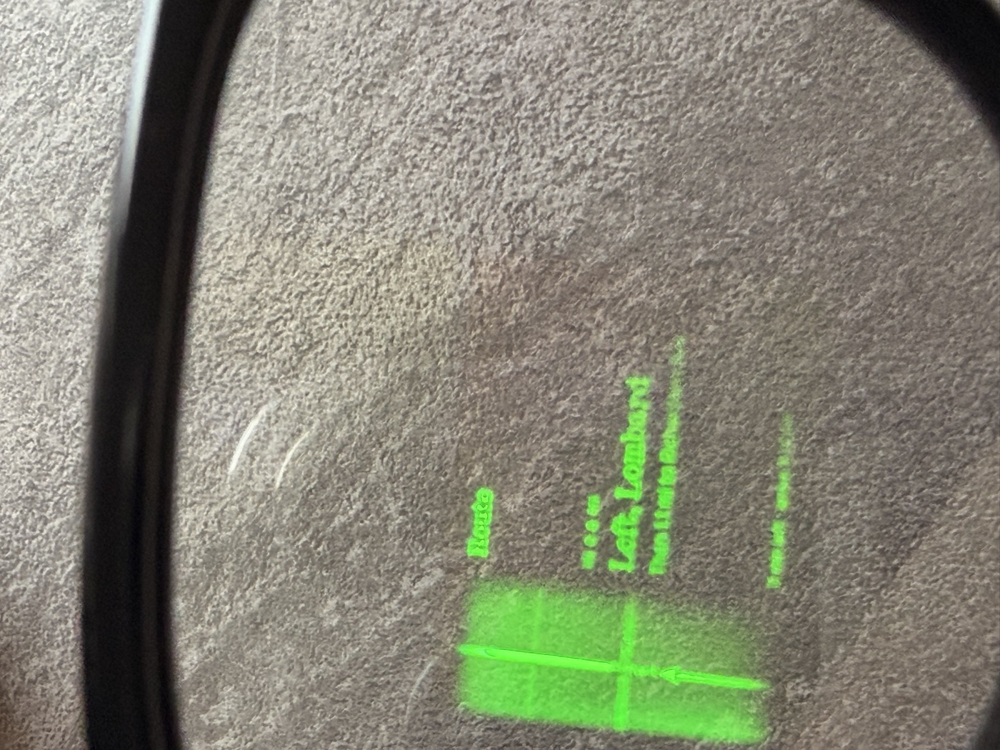
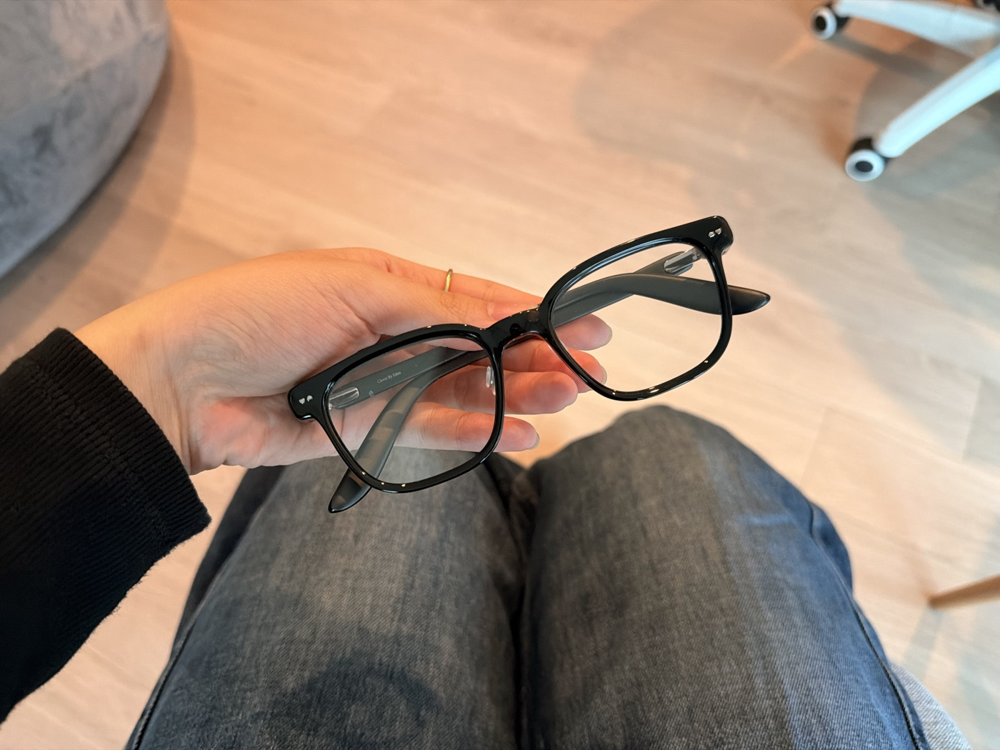
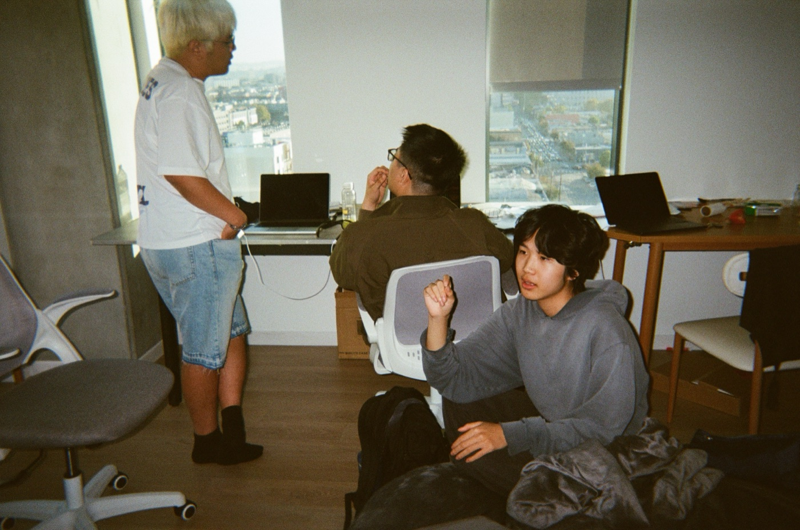
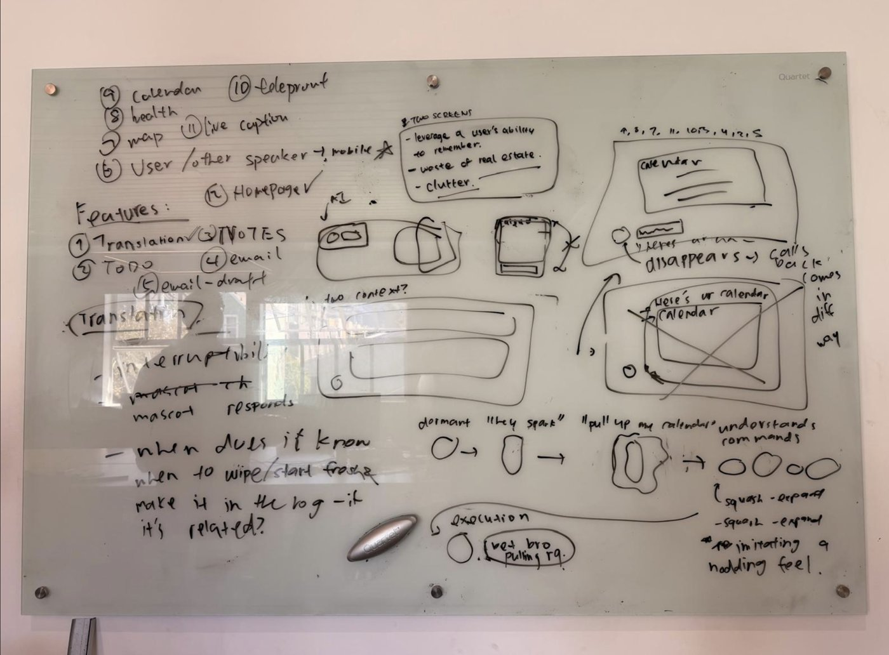
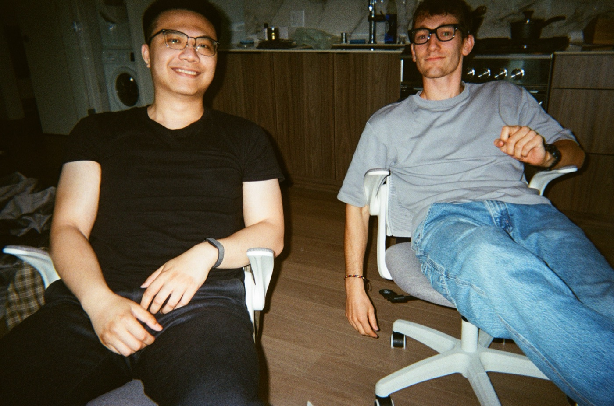
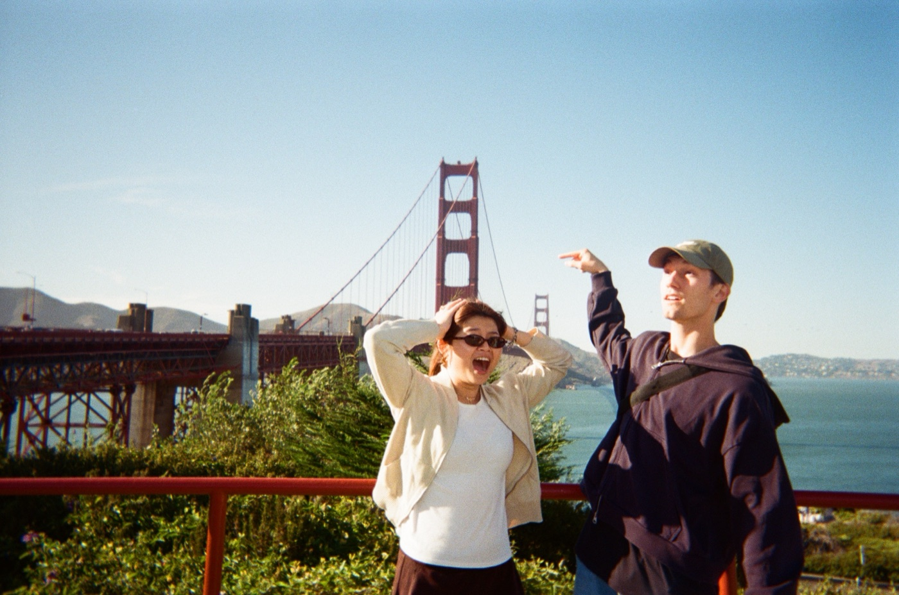
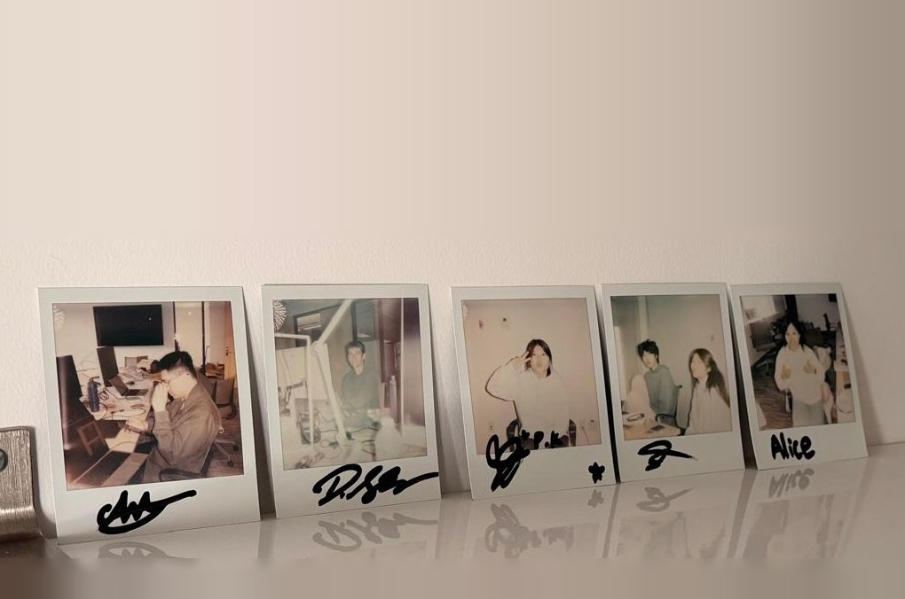

Eden
Eden
Building a quiet assistant at Eden
My internship at Eden, June to October 2026
A little about me
- I am from Jakarta, Indonesia, and a senior at Columbia
- I study how people think and how they use technology
- I am in the US on a student visa
- The founders reached out to me for this internship
Eden makes glasses with a tiny screen inside


- A small green screen floats in front of one eye
- You speak to it, and it answers in one short line
- The glasses have no camera
- The assistant, Clover, lives in the glasses and an iPhone app
I joined when nothing existed yet
Clover- I named the company and built the Eden and Clover brand
- I explored 36 logo designs before one was chosen
- I designed the iPhone app and the rules for the screen
- I built working test versions for the engineers and the manufacturer
Seven stages and two changes of direction


- I studied five other smart glasses already out there
- I ran 8 test sessions with tech and non-tech people
- 52 people at the company wore the glasses while I watched
- Every week I met engineers, hardware designers, our AI researcher and the founders
What the work left behind
- Requests went from 6 steps down to 2
- 67% fewer needless glances at the screen
- Screen rules for 69 situations, including when things go wrong
- The iPhone app, and the Eden and Clover brand
Two readings about attention and help
- 2005: researchers watched 24 office workers through their day
- 57% of their work got interrupted along the way
- 2024: researchers trained AI to offer help before anyone asks
- That paper treats more unasked help as the goal
Mark, Gloria, Victor M. Gonzalez and Justin Harris. "No Task Left Behind? Examining the Nature of Fragmented Work." CHI 2005.
Lu, Yaxi, et al. "Proactive Agent: Shifting LLM Agents from Reactive Responses to Active Assistance." arXiv 2410.12361, 2024.
My work sat between the two readings
- Clover is the kind of assistant the 2024 paper wants
- My testers were the people the 2005 paper describes
- I counted fewer interruptions as success
- So my question became how often it should speak up
What I learned



- Staying quiet is a feature in its own right
- Testing is noisy, so pick one main number to judge by
- Changes of direction were the best part of the work
- Share work early, since everyone moves faster seeing the same thing
How Eden changed how I see internships here
- Before Eden, I believed companies were lethargic and full of office politics
- As an international student, I felt helpless
- At Eden, I found that there are kind people out there
- Now I have a broader understanding of what it means to be an early career product designer
06